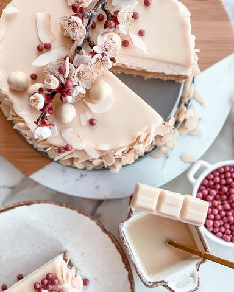

Prolećna kremasta tortica

Moja beleška
SačuvanoPre neki dan sam naišla na ovaj mlečni krem namaz sa kokosom, a pošto je zaista posebno lep u kombinaciji sa listićima badema pomislih kako ne bi bilo loše da bude osnova za neku finu kremastu torticu. I nastala je ova lepotica, verujte mi na reč, ja nisam neki preteran ljubitelj kokosa, ali ovi oblak zalogajčići koji se tope u ustima... Mmmm.. 🥰🥰🥰 Verujem i da bi bila prava poslastica za Uskrs, uz jedan savet -duplirajte mere 🥰 Ja sam ovog puta napravila malenu torticu u kalupu od 18cm, a za duple mere bi vam bio odličan kalup 24-26 cm, tj neka standardna veličina tortice od oko 2 kg ☺️ Sastojci:
Sastojci
- Kora
- Preliv
- Fil
- Završni preliv
Priprema
U jednoj činiji pomešati mlevenu plazmu, veću kašiku kokos krema (oko 40gr) ili bilo kog belog krema, istopljen puter, mleko i listiće badema. Utapkati podlogu i ostaviti u frižider na hladjenju. Napraviti ganaš preliv. Iseckajte omiljenu čokoladu (ja sam ovog puta koristila shogetten trilogia noissete i savršeno se uklopila), pa prelijte vrelom slatkom pavlakom, lepo promešajte, premažite preko kore i vratite na hladjenje. Kada je fil u pitanju prvo kratko umutite marscapone sir, dodajte mu krem, opet sjedinite mikserom i na kraju sipajte i nemućenu slatku pavlaku. Ovog puta mutite nešto duže, dok fil ne bude dovoljno kremast i čvrst. Premažite preko ohladjene podloge. Vratite u frižider, pa napravite završni preliv. Preko kockica čokolade sipate vrelu slatku pavlaku, lepo sjedinite i prelijete tortu. Ostavite duže vreme na hladjenju, a onda uživajte u svakom zalogaju 🥰
Originalni opis sa Instagrama
Prolećna kremasta tortica 🥥🌸 Pre neki dan sam naišla na ovaj mlečni krem namaz sa kokosom, a pošto je zaista posebno lep u kombinaciji sa listićima badema pomislih kako ne bi bilo loše da bude osnova za neku finu kremastu torticu. I nastala je ova lepotica, verujte mi na reč, ja nisam neki preteran ljubitelj kokosa, ali ovi oblak zalogajčići koji se tope u ustima... Mmmm.. 🥰🥰🥰 Verujem i da bi bila prava poslastica za Uskrs, uz jedan savet -duplirajte mere 🥰 Ja sam ovog puta napravila malenu torticu u kalupu od 18cm, a za duple mere bi vam bio odličan kalup 24-26 cm, tj neka standardna veličina tortice od oko 2 kg ☺️ Sastojci: Kora: •150 gr mlevene plazme •40 gr kokos krema •65 gr istopljenog putera •50 gr listića badema •50 ml mleka Preliv: •100 gr omiljene čokolade •50 ml slatke pavlake Fil: •250 gr marscapone sira •200 gr kokos krema •100 ml slatke pavlake Završni preliv: •100 gr bele čokolade •50 ml slatke pavlake U jednoj činiji pomešati mlevenu plazmu, veću kašiku kokos krema (oko 40gr) ili bilo kog belog krema, istopljen puter, mleko i listiće badema. Utapkati podlogu i ostaviti u frižider na hladjenju. Napraviti ganaš preliv. Iseckajte omiljenu čokoladu (ja sam ovog puta koristila shogetten trilogia noissete i savršeno se uklopila), pa prelijte vrelom slatkom pavlakom, lepo promešajte, premažite preko kore i vratite na hladjenje. Kada je fil u pitanju prvo kratko umutite marscapone sir, dodajte mu krem, opet sjedinite mikserom i na kraju sipajte i nemućenu slatku pavlaku. Ovog puta mutite nešto duže, dok fil ne bude dovoljno kremast i čvrst. Premažite preko ohladjene podloge. Vratite u frižider, pa napravite završni preliv. Preko kockica čokolade sipate vrelu slatku pavlaku, lepo sjedinite i prelijete tortu. Ostavite duže vreme na hladjenju, a onda uživajte u svakom zalogaju 🥰 • • • #kremastetorte #kokostorta #nepecenatorta #slatkisi #idejazadezert #prolecnivajb #izmojekuhinje